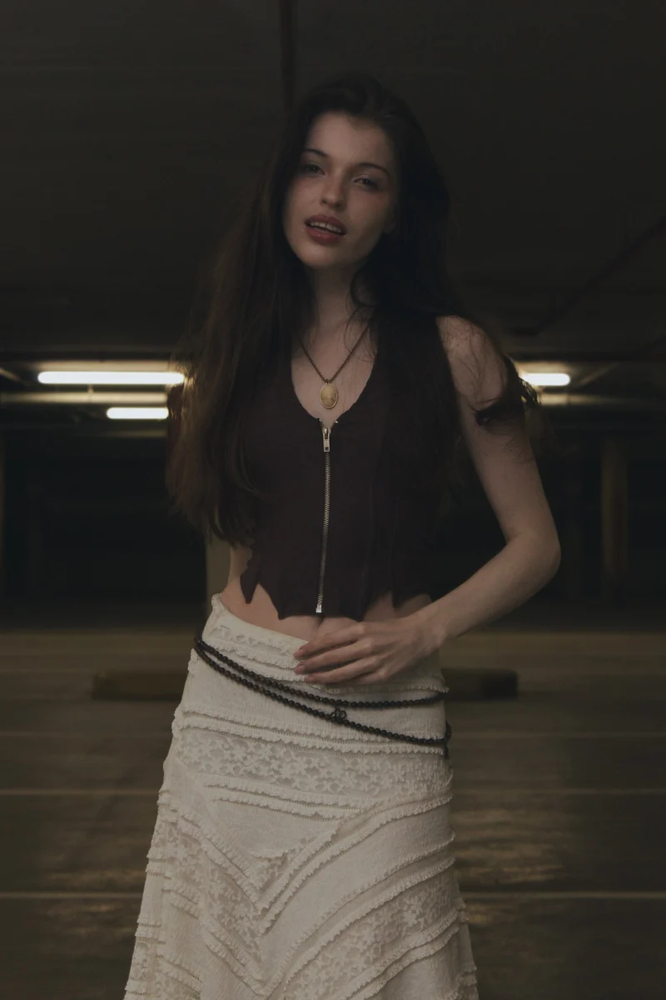
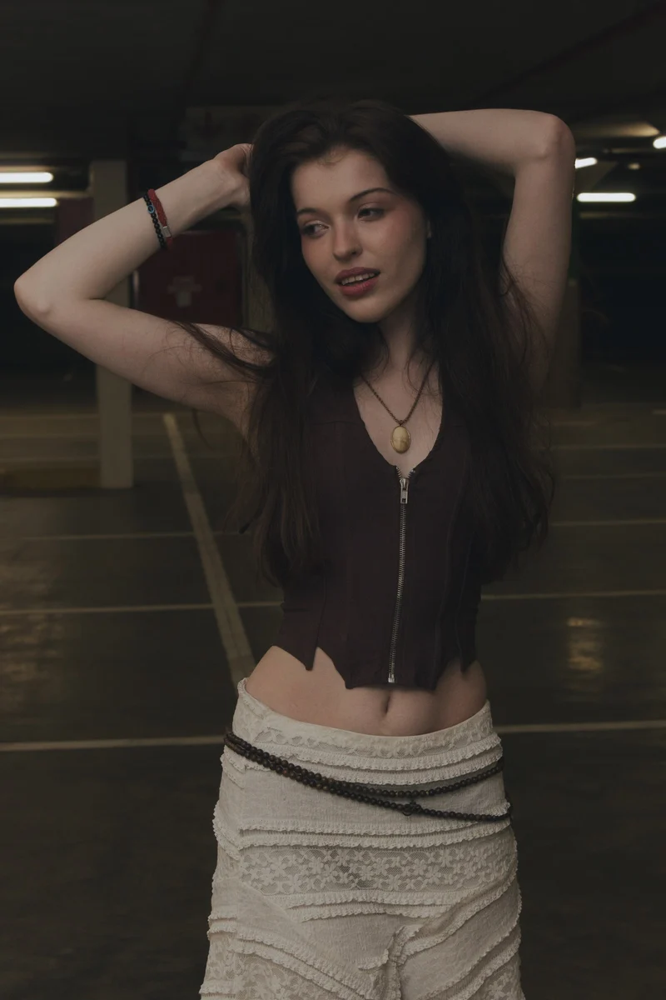
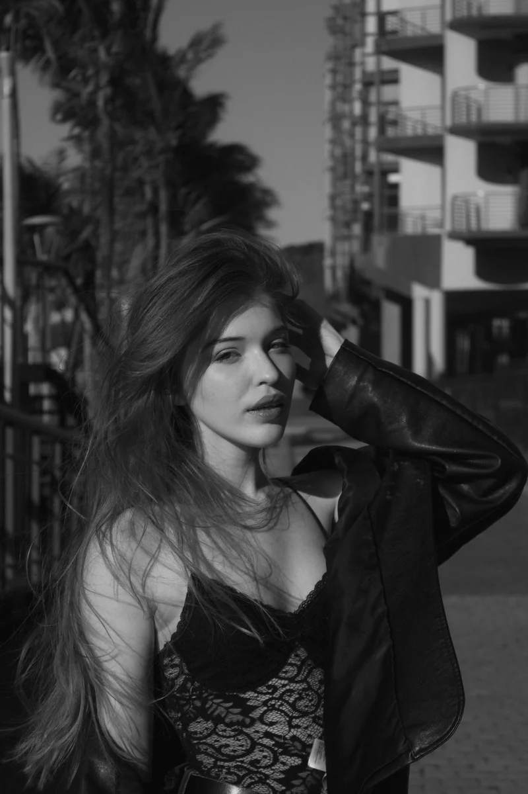
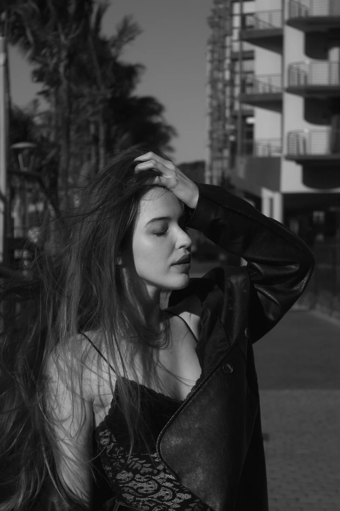
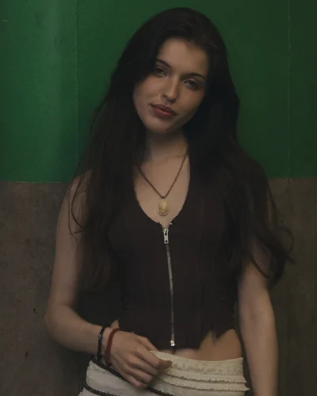
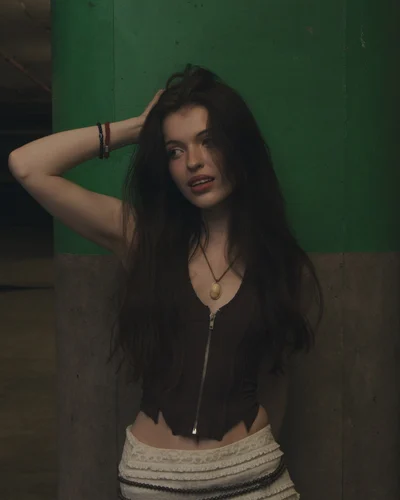
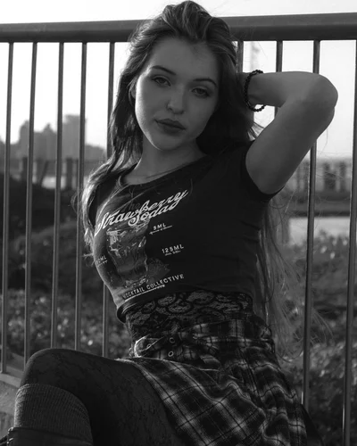

Now
The shipped page at 393px. Three rows of fourteen shown — a representative slice, not the whole wall. Every row in the first block is a pixel-identical 2:3 pair at 262px tall, which is exactly why fourteen of them read as a grid rather than a sequence. The full route is 4406px tall and transfers 1624KB, the heaviest on the site.
VISUALS
28 photographs · Gauteng
Portfolio




Row cadence, measured
Each bar is one row, height to scale. Today the wall
is a 7-bar block, a 6-bar block and a 1-bar block. Interleaving the same fourteen rows turns it
into a 2/1 beat, because row height steps 262→218→262→218px. No row ever holds
two ratios, so tools/check-rows.py still passes untouched — the guarantee
lives in the data, and the data is unchanged.
Proposed
Same frame, same rows, same two-up wall, same ratio per row. Four changes are visible and nothing else moves: the header tightens and gains a hairline plus a mono line, the row order is interleaved so consecutive rows differ in height, the row gap opens to 14px for a little more air between beats, and the crops are untouched — no swap, no number, no cover.
VISUALS
28 photographs · Gauteng
Portfolio
One province. Twelve years.
Every frame here was chosen by hand.






The lightbox
It only exists once a frame is open, so it gets its own panel. The swipe physics, the axis lock, the 44px controls and the 1:1 finger tracking are all correct and are not being touched. What is broken is the caption, the close button, and the fact that the caption says nothing at all.
 ← Prev
Next →
← Prev
Next →
Black and white portrait of a woman with a hand in her hair
Portrait · Gauteng · frame 07 of 28
Close button inside the Dynamic Island
The base rule .lb__x uses top: calc(12px + var(--sat)) —
71px on an iPhone 16, correctly clear of the 59px island band. The wall variant
.lb--wall .lb__x sets top: 18px and puts the control straight back
inside the band, which is the exact regression that base rule's own comment says it was
written to kill. It also hard-codes right: 22px, dropping the
--sar side inset that keeps the target inside the rounded corner in landscape.
In the panel above it sits at 71px.
Caption inside the home-indicator band
.lb__cap base is bottom: calc(18px + var(--sab)) = 52px.
.lb--wall .lb__cap sets bottom: 22px — inside the 34px
home-indicator band, so the caption sits underneath the swipe-to-dismiss target. The base
rule's comment describes this bug in those words. Above, the block clears
--sab entirely.
A caption worth reading
The wall caption is "07 / 28" — a position and nothing else, at 11px
mono. The frame's own description is sitting unused in data-alt. Above, the
description is the caption and the position is demoted to a secondary line with the shoot
and location beside it, at 13.5px. The counter stays: it is not a number printed on a
photograph, and check-rows.py already passes on it, so this is not a reversal
of the no-numbering rule.
Unchanged on purpose
Swipe axis lock, the 10/48/90px thresholds, 44px minimum targets, 1:1 finger tracking and the drag-follows-finger transform all stay exactly as they are. They are correct, and they are the reason the lightbox is usable on touch at all. Swipe down to dismiss and swipe across to step both keep working; only the chrome around the photograph moves.
Desktop, 1280px
Today --row-cols is hardwired to row.length, which
is 2, so at 1280px every cell is 607px wide and the wall runs to roughly 12,700px tall —
two enormous columns and a very long thumb. Capping the wall at 900px puts cells at 417px and
roughly halves the page, and the freed gutter becomes the mono layer doing structural work:
what this is, how many frames, the movements, and the rule that keeps the bottom edge even.
Flush-left, hairline-ruled, no colour, no repaint on resize.
28 photographs · Gauteng
Portfolio
Changes
Seven changes, six of them small. The weight claim is measured, not
estimated: I re-encoded all 28 wall frames at 560w through the same q86 WebP settings as
tools/make-derivatives.py and totalled the files.
-
01
Ship a 560w derivative rung for the wall.
SA wall cell is 174.5 CSS px, so an iPhone 16 at DPR3 needs about 523 device px. The ladder stops at 400/800/1200/1600, so the browser rounds up to the 800w rung and never gets the fidelity it paid for. I re-encoded all 28 wall frames at 560w through the same quality settings as the real pipeline: 821KB total against 1548KB at 800w, a 47% cut. DPR2 phones already pick 400w, so this only moves DPR3 — which is the 1624KB case. Intrinsic
width/heightstay on the file, so nothing reflows and the even bottom is untouched, because the guarantee lives in the data and not in the byte count. -
02
Make the wall's LCP frame eager.
SEvery wall cell passes
-1tofigure(), so every frame on the heaviest route ships asloading="lazy"— including the two in the first row, one of which is the LCP element. The code comment says the first frame is unknowable under column packing, but the wall is rows now, so row 1 frame 1 is knowable. Marking that single frameeagerwithfetchpriority="high"is a one-line change inwallCell()that touches no layout, and leaves the other 27 frames lazy exactly as they should be. -
03
Fix
SwallSizes()to use the widths the phone CSS applies.It computes the cell from
--pad: 26pxand--gut: 14px, but at 640px and below the page sets--pad: 16pxand editorial.css sets the row gap to 12px, and the wall rule overrides--gutoutright. The real cell is 174.5px;wallSizes(2)advertises 163.5px, a 42vw hint that under-declares by 2.4vw. It happens not to change the rung picked at DPR2 or DPR3 today, so this is latent rather than a live regression — but it is the same constants-drift class of bug that has bitten this page three times already. Read the values off the cascade rather than restating them. -
04
Interleave the ratio families so the wall has a cadence.
SAs shipped the 14 rows run 7×2:3, then 6×4:5, then one 9:16 — three blocks, with the first two long enough that the wall reads as a flat field. Interleaving the same 14 rows to 2:3 / 4:5 / 2:3 / 4:5 makes row height step 262→218→262→218px, so the eye gets a beat. This reorders whole rows only: no row ever holds two ratios, so
tools/check-rows.pystill passes untouched. The 9:16 pair is held back to the end, where its 310px cell is the tallest thing in the wall and lands as a closer instead of a lump. -
05
Restore the safe-area offsets that
S.lb--walloverrides.Two live bugs, both in
src/styles.css, both of the form "the variant undid the fix the base rule was written to make".
·.lb__xbase:top: calc(12px + var(--sat))= 71px on an iPhone 16, correctly below the 59px island..lb--wall .lb__x:top: 18px, back inside the band, and it also hard-codesright: 22px, dropping the--sarinset that keeps the target inside the rounded corner in landscape.
·.lb__capbase:bottom: calc(18px + var(--sab))= 52px..lb--wall .lb__cap:bottom: 22px, inside the 34px home-indicator band, so the caption sits under the swipe-to-dismiss target. Both fixes are deleting an override, not adding a rule. -
06
Give the lightbox caption something worth reading.
SThe wall caption is
"07 / 28"— a position and nothing else, at 11px mono, on the home-indicator band. The frame's own description is available indata-altand discarded. Show the description as the caption and demote the counter to a small secondary mono line, then lift the whole block clear of--saband take the type to 12.5–13.5px. The position indicator stays, because it lives in the viewer chrome rather than on the photograph, andcheck-rows.pyalready passes on it. -
07
Cap the desktop wall and give the right gutter to the mono layer.
M--row-colsis hardwired torow.length, which is 2, so at 1280px each cell is 607px wide and the wall runs to roughly 12,700px tall: two enormous columns and a very long thumb. Capping the wall at 900px puts cells at 417px, where a 2:3 frame renders 625px tall, and roughly halves the page. The freed 300px becomes a mono spec rail — frame count, format, location, the movements, and a line stating the even-bottom rule. Staticmax-width, so nothing repaints on resize. This is the only change here that is not small, and it is the one most worth arguing about: it changes the desktop composition, not just its size.
What is deliberately not changing
No per-column scroll. Alwin's call — "I dont like having the scroll on each column anymore, static is better." The wall stays static and the page scrolls once.
No numbers on the images. Nothing is printed on a frame. The lightbox counter is a position indicator in the viewer chrome, which is where it has always been.
No category filter. "a filter over hand-picked work hides work on purpose" — and with 28 chosen frames there is nothing left for it to select between.
No hover image swap. "when i hover it destroys the crop." The greyscale
contrast(1.06) at rest still releases to full colour on hover exactly as shipped,
which reveals the photograph without moving a pixel of it.
No object-fit: cover anywhere. Aspect ratio and focal point only, and
focal point only where a specific frame needs it.
No repaint on resize. Nothing here touches window.resize. iOS fires it on
every address-bar collapse, so the desktop cap is a static max-width and the phone
layout is fluid CSS, not JS-driven.